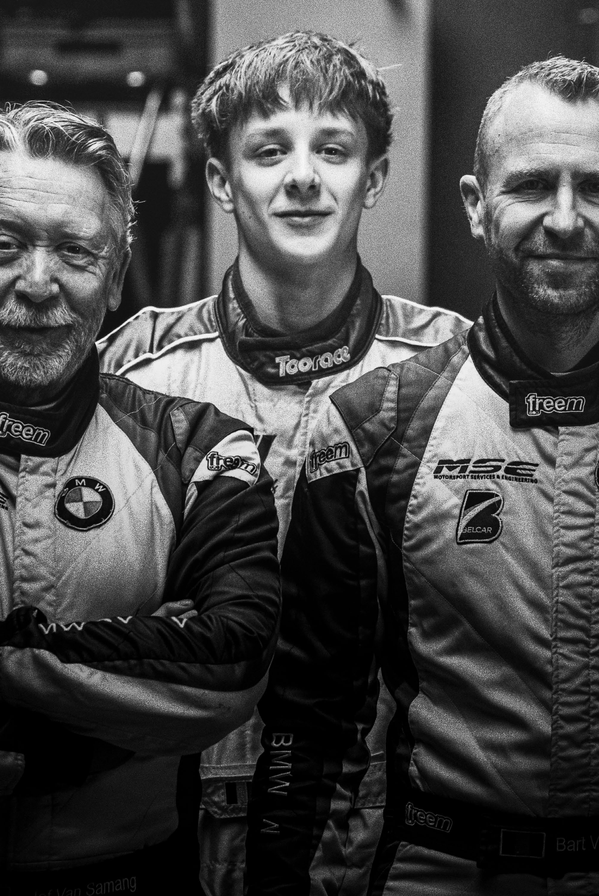
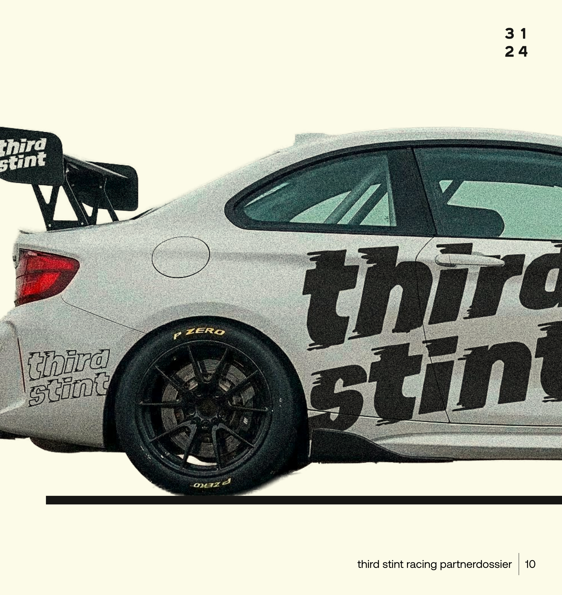

JEF
Opa · Grandfather
- 115 races in nationale kampioenschappen
- 20× 24 Hours of Zolder
- 2× klasse kampioen
- 1× klasse vice-kampioen
- 3× klassewinnaar 24 Hours of Zolder
- 17 podium finishes (6× 1st · 4× 2nd · 7× 3rd)
Partnerdossier · 2026–2027
Historiek
16 jaar geleden stuurde Jef Van Samang een officiële uitnodiging naar zijn eigen kleinzoon om als piloot te testen voor zijn raceteam. In de euforie misschien wat overmoedig, want kleine Wout was nog maar net geboren. Met een bijzonder grote kans op goede racegenen dankzij opa Jef en papa Bart Van Samang.
We zijn 16 jaar later. Kleine Wout is intussen groot geworden. Die racegenen zijn onmiskenbaar bovengekomen. Hij heeft die uitnodiging van zijn opa nog op de muur hangen. En hij gaat nu de uitdaging aan.
Samen met papa Bart en opa Jef vormt hij vanaf 2026 een nieuw raceteam: Third Stint Racing. Hun droom is even uniek als aartsmoeilijk: de eersten zijn die competitief met drie generaties deelnemen aan een officiële endurance race. En dat in een thuiswedstrijd beladen met emoties: de 24u van Zolder. Samen met familie, vrienden en partners.
Van Samang
Vader en zoon Van Samang zijn al jaren bekende gezichten in de Belgische racewereld. Ze combineren 55 jaar gezonde ambitie met nuchter hard werken en omarmen de kans om hun passie samen als familie te beleven.
Jef en Bart. Bart en Jef. Altijd al een unieke combinatie geweest.
Opa · Grandfather

Papa · Father
Missie & Visie
Missie — Wout, Bart en Jef Van Samang willen als eerste raceteam ooit met drie generaties officieel racen in de 24u van Zolder.
Visie — Een volwaardig raceteam opbouwen met een piloten line-up van drie generaties uit één familie. Met partners die even ambitieus en enthousiast zijn.
leef met
passie
koester je
familie
respecteer
hard werken
blijf ambitieus
en nieuwsgierig
Partnership
THE generacing OF SPEED
Een raceteam runnen is een spannend avontuur. Maar tegelijk beseffen we heel goed dat het ook een business is met budgetten en doelstellingen.
Met Third Stint Racing willen we samen met onze partners dit unieke verhaal schrijven en beleven. We kiezen er heel bewust voor om met maximum 8 partners samen te werken. Zo kunnen we elke partner waarde bieden waar (klanten)beleving centraal staat.
Daarbij streven we naar een match met partnerbedrijven die zinvol is en tegelijk ook goed voelt. Een relatie gebaseerd op gedeelde waarden en ambitie.
slots voor
8 partners.
Om als eersten met drie generaties te racen in een officiële wedstrijd, zijn er sportieve en financiële inspanningen nodig. Third Stint Racing heeft voor de periode 2026–2027 een budget nodig van €200.000 (excl. btw), verdeeld over twee jaren in twee aparte periodes vrij te maken.
Leaderboard
Partnerformules
get in the
€10k2 jaar · €5k / jaar
push for a
€25k2 jaar · €12,5k / jaar
Hoofdpartner
strap in and hear the
€50k2 jaar · €25k / jaar
De machine
'Generazor'
De wagen waarmee Wout, Bart en Jef samen de pitstraat op komen. Eén auto, drie piloten, één doel: als eerste familie met drie generaties de 24u van Zolder rijden.

Timeline · Wout & team
Contact
Klaar om dit unieke verhaal mee te schrijven? Er zijn nog 7 slots open. Neem rechtstreeks contact met Bart.